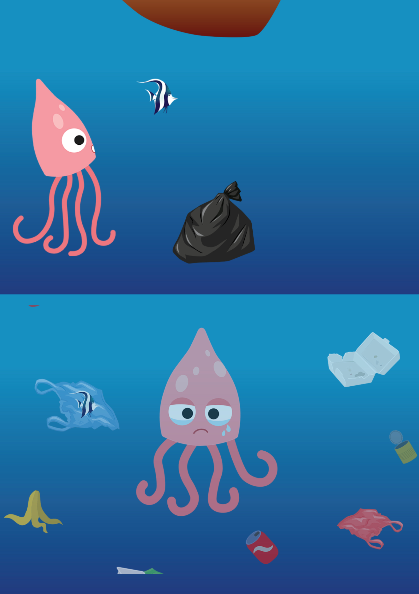

Using the style given, in my case - "FILM NOIR" I had to make a responsive website with 4 pages - home page, page about the style given, page about me and one page about the design of the website. The requirements for the hand-in were:
A responsive version of your website.
At least 2 breakpoint in CSS. E.g. for various viewports and devices.
Use of CSS grid on at least the overall layout. E.g. header, navigation, main content etc.
Validated HTML (on all pages)
Validated CSS (external stylesheet)
THEME 02: Basic Content
02.01.02 XD prototype
In this project we had to do for the first time a XD prototype the requirements before hand-in were:
Decide what content is going to be
present in the 2 pages you are going to
make.
Work only on the mobile view.
Create some draft content (excl. The
video)
Minimum 2 pages
Story without words - "THE GIRL"
02.01.03 Link to Video: Story without words
This was a group project. We had to came up with a story, that we had to tell without any words spoken. We have decided to tell a love story about a boy, who finaly decide to talk with the desired girl. How he did it and was it succesfull you can see in the short movie. The requirements were:
Whatever you decide to do, you have
to tell the story using moving images only.
It is ok to use sound in all other forms than
words.
Use a smart phone to film the story.
Make sure you have enough shots.
Transfer your movie clips to your computer.
Edit your clips in Adobe Premiere Pro.
Export your video as an .mpg file using the
H.264 codec. Resolution should be HD (1080p).
Upload your video to a Youtube channel
and mark it as ”private”
This is another group project were we had to work on creating a microsite. Coming up with a story about cycling in Denmark. Here you can see the documentation that we`ve done working on it.
02.01.05 Treatment - This is the story for your microsite. It must be
clear to understand for other professionals. The story must have a beginning, a middle and and end.Consider the dramaturgical model when
creating your story.
02.01.07 Storyboard - Before you go out to film, you need to have a
storyboard, that will clarify for all group
members what images and dramaturgical
elements you need in order to tell your story.
The storyboard should explain when you have the
close ups, medium shots or long shots.
02.01.08 Documentation - Frontpage: Group name and names of all group members + link to each group members URL. Technical documentation: List of all images used on the website and their width x height + file size in KB.
Video documentation: Treatment and storyboard of the video.
Moodboard: For the micro site including 3-5 keywords. Style tile: For the micro site. Design Principles applied: Visualize the Design principles used. Test results.
02.01.09 PDF with Links to micro site
This was the final task for this theme, here you can find the microwebsite finished and the video describing the story we`ve came up with in the webpage. Enjoy! The requirements before hand-in were:
2-3 pages
Responsive to small, medium, large
screens.
Images that are 1x and 2x (normal and
retina).
Video that relates to the page it is on.
Validated html and css.
THEME 03: Basic Animation
03.01.02. Link to simple animation
This exact project was to excersize with the JavaSckript and drawing animation characters. We had to building a web page containing a character and 10/15 buttons. When the user clicks a button, an animation starts. The buttons that i`ve done are : move, move to 30%, move from 30%, jump, one jump, glow, fade, fall down, mirror, shake. Of course the requirements:
Consider the exercise split into two parts. Tuesday you’ll build the HTML and the CSS for the animations, and Wednesday you’ll add JavaScript to control the animations.
Every animation must have a start and a stop button beneath the scene, or a toggle button that handles both.
03.02.01 week submission - part one, part two and part three
Individual project to create my own animation charackter with full documentation about it, plus one animated sprite sheet witch you can see here.
PART ONE - Style tile + Story, genre and message
PART TWO - Story board + Work sheet
PART THREE - spritesheet animation

03.03.02 Interactive Animation
The assignment:Requirements:
Choose and code a scene from, your story, a movie or fairy-tale.
Make a storyboard of the small part you wish to code/animate.
Create a sequence diagram based on the storyboard
The interactive story has to consist of at least 5 chained events that bring the story forward.
You must use at least 3 different event types (click, ended, animationend, etc.).
Sound should be included in the scene. Consider also using video if appropriate.
There should be clear visual indication of what is interactive at every step (affordance).
The storyboard and the sequence diagram must be linked to from the animation webpage.
03.05.02 Link to final interactive production
Project week - Overview:Requirements:
Create an interactive animation of a scene from your favourite movie, novel or story. There is special focus on a good User Experience for young adults interested in art. This project covers every aspect of multimedia development: The process, group work, design development, storytelling, interactivity, usability, coding and presentation.
Group work with 6 people.
The scene should make use of the narrative curve, it should be driven forward by at least
3 types of events. There should be several user clicks.
You have to draw/create most of the graphics (in illustrator/photoshop).
You should record your own dialogs/sounds for the story.
Make a detailed storyboard for the scene.
Make the sequence diagrams based on storyboard.
The animations should be created with CSS and make use of some of the animation
principles.
JavaScript should be mainly used to trigger/start/chain the animations.
No JavaScript libraries for animations are allowed! (consolidate the basics you have learned)
The scene has to include the given style and piece of music/song.
Video screencast - Super Rutin animation
03.05.03 Link to screen cast documentation
Each member of the project had made a youtube channel and uploaded the screen cast:
Instead of presenting in class we record a Screencast to document and present
the interactive story. We have used quicktime to record. We have edited the video with Adobe
Premier.
The duration is up to 10 min, as required.
In the video we put information about : - what is the assignment about, - the team members and responsibilities in the project, what was the most useful in the collaboration agreement., Given: [story], [style], [music], personas collage (point out the most important aspects), detailed storyboard (dramaturgic elements, staging, camera angles), character design and backgrounds, sequence diagram and example of code, Go through the interactive story.
Theme 04: Basic UX
04.02.01. Design sprint
Design Sprint process:
Monday - Map
Tuesday - Sketch
Wednesday - Decide
Thursday - Prototype
Friday - Test
Group project in witch I've experienced working with Design Sprint for the first time. I think the method is very interesting and productive. Following it for 5 days we`ve developed a prototype of an improved ( part of) Fronter - according to the functionality/feature we`ve decided to innovate. Our point of departure was a formulated long term goal and a specific target audience - all decided upon on day one of the design sprint week. The final submission - an XD prototype.We had been working in group of 7 people. The group was working together in different ways during the sprint - and each of the members built individual XD prototypes.
04.03.01. Web prototype
In this individual project, also part of the theme 4, I had to code a functional digital solution (HTML/CSS prototype) based on the XD prototype I produced in the previous project. With requirements:
Hand coded HTML, CSS, JS hosted on GitHub and my own domain.
Containing at least one form with different input types.
Based on KEA's design guide.
Coded and styled for mobile devices.
With functional user flow with tasks and subtasks.
04.04.01. Design sprint: Native app
This was again group project. In it we were again using the Design Sprint method to sole the task that we were working on. Link to XD prototype:
So far, we’ve worked on developing a mobile solution of an improved Fronter implementing KEA’s goals and feature wishes. Now we had total freedom as UX designers? We made a native app that equals the Learning Management System of our dreams!
The Requirements : The native app has to be native for either an Android or iOS smartphone. With defined long term goals we are aiming for. Work after the Design Sprint concept developing approach. Wore in grop of 7 and you must make them yourselves. The high-fidelity interactive proof of concept prototype is made in Adobe XD.